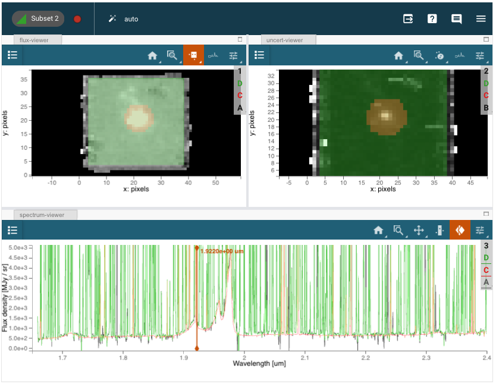

NIRSpec IFU 最优点源提取#
本笔记本展示了在JWST NIRSpec IFU数据中提取点源的各种方法，利用了对类星体SDSS J165202.64+172852.3的Q3D（PID 1335）观测。提取技术包括使用Cubeviz的子集提取、对spaxels的简单求和、圆柱形光圈、锥形光圈光度测量，以及使用WebbPSF模型PSF的最佳点源提取。
用例： 最优光谱提取；方法参考 Horne (1986)。
数据： JWST NIRSpec IFU 数据；点源。
工具： jwst, webbpsf, matplotlib, scipy, 自定义函数。
跨仪器： 任何光谱仪。
文档： 本笔记本是 STScI 更大 后处理数据分析工具生态系统 的一部分。
目录#
1. 导入 #
numpy 用于数组数学运算
scipy 用于 ndimage 移动
specutils 用于 Spectrum1D 数据模型
jdaviz : 用于数据可视化
photutils 用于定义圆形光圈
astropy.io 用于读取和写入 FITS 立方体和图像
astropy.wcs, units, coordinates 用于定义和读取 WCS
astropy.stats 用于 sigma_clipping
astropy.utils 用于从 URL 下载文件
matplotlib 用于绘制光谱和图像
os 用于文件管理
astroquery.mast 用于下载数据
import numpy as np # 导入NumPy库，用于数值计算
import scipy # 导入SciPy库，用于科学计算
from specutils import Spectrum1D # 从specutils库导入Spectrum1D类，用于处理光谱数据
import jdaviz # 导入jdaviz库，用于数据可视化
from jdaviz import Cubeviz, Specviz # 从jdaviz库导入Cubeviz和Specviz类，用于立方体和光谱数据的可视化
print("jdaviz Version={}".format(jdaviz.__version__)) # 打印jdaviz库的版本信息
from photutils.aperture import CircularAperture, aperture_photometry # 从photutils库导入CircularAperture类和aperture_photometry函数，用于天文图像的光度测量
from astropy.io import fits # 从astropy库导入fits模块，用于处理FITS文件格式
from astropy import wcs # 从astropy库导入wcs模块，用于处理世界坐标系统
from astropy import units as u # 从astropy库导入units模块，用于处理物理单位
import os # 导入os模块，用于操作系统功能
from astroquery.mast import Observations # 从astroquery库导入Observations类，用于查询MAST数据库中的观测数据
jdaviz Version=4.1.1
import matplotlib.pyplot as plt # 导入matplotlib库中的pyplot模块，用于绘图
from matplotlib.colors import LogNorm # 从matplotlib.colors导入LogNorm，用于对数归一化
# 在Jupyter Notebook中内联显示图形
%matplotlib inline
2. 读取 NIRSpec IFU 数据立方体 #
NIRSpec IFU 对类星体 SDSS J1652+1728（红移 z=1.9）的观测是使用 G235H 光栅和 F170LP 滤光片进行的，覆盖波长范围为 1.66-3.17 微米，光谱分辨率为 R~2700。IFU 的 spaxels 边长为 0.1”。
从 MAST 获取的 level-3 管道处理数据立方体（s3d.fits，结合了所有的抖动曝光）将在下面的下一个笔记本单元中使用。
# 下载数据文件
uri = "mast:jwst/product/jw01335-o008_t007_nirspec_g235h-f170lp_s3d.fits"
# 使用Observations类下载文件
result = Observations.download_file(
uri, base_url="https://mast.stsci.edu/api/v0.1/Download/file" # 指定下载文件的基础URL
)
# 检查下载结果是否有错误
if result[0] == "ERROR":
raise RuntimeError("Error retrieving file: " + result[1]) # 抛出运行时错误并显示错误信息
# 构造本地文件路径
filename = os.path.join(os.path.abspath("."), uri.rsplit("/", 1)[-1]) # 获取当前目录并拼接文件名
# 可选：用当前目录中的自定义重处理数据替换MAST数据
# filename="./jw01335-o008_t007_nirspec_g235h-f170lp_s3d.fits" # 指定自定义文件路径（注释掉）
2025-03-18 22:07:12,068 - stpipe - INFO - Found cached file jw01335-o008_t007_nirspec_g235h-f170lp_s3d.fits with expected size 102585600.
INFO: Found cached file jw01335-o008_t007_nirspec_g235h-f170lp_s3d.fits with expected size 102585600. [astroquery.query]
# 打开并检查文件和WCS（世界坐标系统）
with fits.open(filename, memmap=False) as hdulist: # 以非内存映射方式打开FITS文件
sci = hdulist["SCI"].data # 获取科学数据部分
err = hdulist["ERR"].data # 获取误差数据部分
w = wcs.WCS(hdulist[1].header) # 从第二个头文件创建WCS对象
hdr = hdulist[1].header # 获取头文件信息
print(w) # 打印WCS信息
# 窗口化波长范围以专注于Hbeta-[OIII]
spec1d = Spectrum1D.read(filename) # 读取一维光谱数据
slice_range = range(500, 1100, 1) # 定义波长范围的切片
wavelength = np.array(spec1d.spectral_axis.value)[slice_range[0]: slice_range[-1] + 1] # 获取指定范围内的波长值
# 为孔径光度测量创建立方体切片列表
sci_data = [] # 初始化科学数据列表
sci_var = [] # 初始化误差数据列表
for idx in slice_range: # 遍历切片范围
sci_data.append(sci[idx, :, :]) # 将科学数据的切片添加到列表中
sci_var.append(err[idx, :, :]) # 将误差数据的切片添加到列表中
data = np.nan_to_num(np.array(sci_data)) # 将科学数据转换为NumPy数组并处理NaN值
var = np.array(sci_var) # 将误差数据转换为NumPy数组
print("\nTrimmed data shape:", data.shape) # 打印修剪后的数据形状
WCS Keywords
Number of WCS axes: 3
CTYPE : 'RA---TAN' 'DEC--TAN' 'WAVE'
CRVAL : -106.98898425200001 17.481222214 1.6601979666156693e-06
CRPIX : 22.0 20.0 1.0
PC1_1 PC1_2 PC1_3 : -1.0 0.0 0.0
PC2_1 PC2_2 PC2_3 : 0.0 1.0 0.0
PC3_1 PC3_2 PC3_3 : 0.0 0.0 1.0
CDELT : 2.77777781916989e-05 2.77777781916989e-05 3.95999988541007e-10
NAXIS : 43 39 3814
Trimmed data shape: (600, 39, 43)
# 创建 Cubeviz 实例
cubeviz = Cubeviz()
# 加载数据文件
cubeviz.load_data(filename)
# 显示 Cubeviz 界面
cubeviz.show()
# 设置光谱显示的 x 轴范围
cubeviz.specviz.x_limits(1.65 * u.um, 2.4 * u.um)
# 设置光谱显示的 y 轴范围
cubeviz.specviz.y_limits(0.0, 5.0e3)
# 选择要可视化的切片，切片索引为 714
cubeviz.select_slice(714)
3. 使用Cubeviz可视化科学数据 #
{kind=link}
用户界面说明：#
使用光谱查看器切片工具在无线区域内浏览数据立方体。
在通量查看器中，选择一个以类星体为中心的圆形子区域，以及一个方形区域以限定光谱和背景提取的良好区域。
请注意，这些区域是像素化的，不包括分数像素。
光谱查看器中的默认折叠方法是“求和”（Sum）（见绘图选项：线）。 “中位数”（Median）在可视化时也可能有用，但不会提供总通量的准确测量。
4. 从Cubeviz导出源和良好数据区域 #
将用户在Cubeviz中定义的区域导出为astropy PixelRegions
try:
print("\nSource Region") # 打印源区域的标题
region1 = cubeviz.get_interactive_regions()['Subset 1'] # 获取交互区域的子集1
print(region1) # 打印子集1的信息
center_xy = [region1.center.x, region1.center.y] # 获取子集1的中心坐标
r_pix = region1.radius # 获取子集1的半径
region1_exists = True # 标记子集1存在
except Exception:
print("There is no Subset 1 selected in the cube viewer.") # 如果没有选择子集1，打印错误信息
center_xy = [17.1, 20.0] # 使用默认中心坐标
r_pix = 5.92 # 使用默认半径
print("Using default pixel center and radius:") # 打印使用默认值的提示
print("Center pixel:", center_xy) # 打印默认中心坐标
print("Radius (pixels):", r_pix) # 打印默认半径
region1_exists = False # 标记子集1不存在
print("\nGood Data Region") # 打印良好数据区域的标题
try:
region2 = cubeviz.get_interactive_regions()['Subset 2'] # 获取交互区域的子集2
print(region2) # 打印子集2的信息
region2_exists = True # 标记子集2存在
data_xrange = [ # 计算良好数据的x范围
round(region2.center.x - region2.width / 2), # 计算xmin
round(region2.center.x + region2.width / 2), # 计算xmax
]
data_yrange = [ # 计算良好数据的y范围
round(region2.center.y - region2.height / 2), # 计算ymin
round(region2.center.y + region2.height / 2), # 计算ymax
]
print("Good data (xmin,xmax), (ymin,ymax):", data_xrange, data_yrange) # 打印良好数据的范围
good_data = np.nan_to_num( # 将数据中的NaN值替换为0
data[:, data_yrange[0]: data_yrange[1], data_xrange[0]: data_xrange[1]] # 提取良好数据
)
good_var = var[:, data_yrange[0]: data_yrange[1], data_xrange[0]: data_xrange[1]] # 提取良好变量数据
except Exception:
print("There is no Subset 2 selected in the cube viewer.") # 如果没有选择子集2，打印错误信息
region1_exists = False # 标记子集2不存在
data_xrange = [7, 36] # 使用默认的x范围
data_yrange = [6, 33] # 使用默认的y范围
good_data = np.nan_to_num( # 将数据中的NaN值替换为0
data[:, data_yrange[0]: data_yrange[1], data_xrange[0]: data_xrange[1]] # 提取良好数据
)
good_var = var[:, data_yrange[0]: data_yrange[1], data_xrange[0]: data_xrange[1]] # 提取良好变量数据
print("Using default good data (xmin,xmax), (ymin,ymax):", data_xrange, data_yrange) # 打印使用默认范围的提示
5. 从Cubeviz光谱查看器提取子集光谱和背景 #
从光谱查看器中检索用户定义区域的折叠光谱（Subset1），作为Spectrum1D对象。
# 获取光谱子集
subsets = cubeviz.specviz.get_spectra()
# 打印光谱子集的键
print(subsets.keys())
print("\nSource") # 打印“源”标题
try:
# 获取第一个光谱子集，空间子集为“Subset 1”，函数为“sum”
spectrum_subset1 = cubeviz.get_data(cubeviz.data_labels[0],
spatial_subset="Subset 1", function="sum")
# 打印第一个光谱子集
print(spectrum_subset1)
except Exception:
# 如果没有选择“Subset 1”，则打印错误信息
print("There is no Subset 1 selected in the spectrum viewer.")
print("\nBackground") # 打印“背景”标题
try:
# 获取第二个光谱子集，查找包含“Subset 2”的键
spectrum_subset2 = subsets[
[i for i in subsets.keys() if "Subset 2" in i][0]
]
# 打印第二个光谱子集
print(spectrum_subset2)
except Exception:
# 如果没有选择“Subset 2”，则打印错误信息
print("There is no Subset 2 selected in the spectrum viewer.")
6. 通过对光谱像素求和提取光谱 #
对立方体中的所有光谱像素（spaxels）进行简单的numpy求和，作为一种初步的提取方法。同时对波长进行求和，以压缩立方体。
# Sum over wavelength # 对波长进行求和
# Clip data for display purposes # 限制数据以便于显示
clip_level = 4e4 # 设置剪切水平
data_clipped = np.clip(good_data, 0, clip_level) # 将数据限制在0到clip_level之间
cube_sum = np.sum(data_clipped, axis=0) # 在第一个轴上对剪切后的数据进行求和
# Extraction via sum over spaxels # 通过对spaxel求和进行提取
fnu_sum = np.sum(good_data, axis=(1, 2)) # 在第二和第三个轴上对good_data进行求和
fnu_sum_clipped = np.clip(fnu_sum, 0, clip_level) # 将求和结果限制在0到clip_level之间
flux_spaxsum = np.array(fnu_sum) * u.MJy / u.sr # 将求和结果转换为流量单位
spec1d_spaxsum = Spectrum1D(spectral_axis=wavelength * u.um, flux=flux_spaxsum) # 创建一维光谱对象
# Plots # 绘图
f, (ax1, ax2) = plt.subplots(1, 2, figsize=(10, 4)) # 创建一个包含两个子图的图形
ax1.plot(wavelength, fnu_sum) # 在第一个子图中绘制波长与flux的关系
ax1.set_title("Spaxel sums") # 设置第一个子图的标题
ax1.set_xlabel("Wavelength (um)") # 设置x轴标签
ax1.set_ylabel("Flux (MJy/sr)") # 设置y轴标签
ax1.set_ylim(0, 5e3) # 设置y轴的范围
ax2.imshow(cube_sum, norm=LogNorm(vmin=100, vmax=clip_level), origin="lower") # 在第二个子图中显示cube_sum的图像，使用对数归一化
ax2.set_title("Slice sums") # 设置第二个子图的标题
plt.show() # 显示图形
7. 在恒定半径圆形光圈中提取光谱（圆柱体） #
该方法适用于扩展源。
# CircularAperture使用xy像素
aperture = CircularAperture(center_xy, r=r_pix) # 创建一个圆形光圈，中心为center_xy，半径为r_pix
print(aperture) # 打印光圈信息
cylinder_sum = [] # 初始化一个空列表，用于存储每个切片的光度总和
for slice2d in data: # 遍历数据中的每个二维切片
phot_table = aperture_photometry(slice2d, aperture) # 对当前切片进行光度测量
cylinder_sum.append(phot_table["aperture_sum"][0]) # 将测量到的光度总和添加到列表中
flux_cylinder = np.array(cylinder_sum) * u.MJy / u.sr # 将光度总和转换为适当的单位
spec1d_cylinder = Spectrum1D(spectral_axis=wavelength * u.um, flux=flux_cylinder) # 创建一维光谱对象，包含波长和光度
8. 在线性扩展圆形光圈（锥形）中提取光谱 #
该方法适用于点源点扩散函数（PSF），其宽度与波长成正比。
# 参考波长，用于扩展光圈
lambda0 = wavelength[0] # 获取波长数组中的第一个波长作为参考波长
print("Reference wavelength:", lambda0) # 打印参考波长
cone_sum = [] # 初始化一个空列表，用于存储光圈的总光度
idx = -1 # 初始化索引
# 遍历数据和波长的组合
for (slice2d, wave) in zip(data, wavelength):
idx = idx + 1 # 索引自增
r_cone = r_pix * wave / lambda0 # 计算当前波长下的光圈半径
aperture_cone = CircularAperture(center_xy, r=r_cone) # 创建一个圆形光圈对象
# 使用光圈进行光度测量
phot_table = aperture_photometry(
slice2d, aperture_cone, wcs=w.celestial, method="exact" # 进行精确的光度测量
)
cone_sum.append(phot_table["aperture_sum"][0]) # 将测量结果添加到列表中
flux_cone = np.array(cone_sum) * u.MJy / u.sr # 将光圈总光度转换为适当的单位
spec1d_cone = Spectrum1D(spectral_axis=wavelength * u.um, flux=flux_cone) # 创建一维光谱对象
9. 绘制并比较非最优光谱提取 #
比较在圆柱体、锥体和Cubeviz子集提取的光谱。
f, (ax1) = plt.subplots(1, 1, figsize=(15, 5)) # 创建一个15x5英寸的子图
# ax1.plot(wavelength, flux_spaxsum.value, label="All spaxels", c='k') # 绘制所有spaxel的光谱（已注释）
ax1.plot(wavelength, flux_cylinder.value, label="Cylinder", c="b") # 绘制圆柱体的光谱，颜色为蓝色
ax1.plot(wavelength, flux_cone.value, label="Cone", c="darkorange", alpha=0.5) # 绘制锥体的光谱，颜色为深橙色，透明度为0.5
try:
ax1.plot(
wavelength,
spectrum_subset1.flux.value[slice_range[0]: slice_range[-1] + 1], # 绘制Subset1的光谱
c="r", # 颜色为红色
label="Subset1", # 标签为Subset1
alpha=0.4, # 透明度为0.4
)
except Exception: # 捕获异常
print("There is no Cubeviz Subset1 spectrum to plot.") # 输出错误信息
ax1.set_title("Non-optimal spectral extractions") # 设置图表标题
ax1.set_xlabel("Observed Wavelength (microns)") # 设置x轴标签
ax1.set_ylabel("Flux Density") # 设置y轴标签
ax1.set_ylim(0, 5.0e3) # 设置y轴范围
ax1.legend() # 显示图例
plt.show() # 显示图形
非最优的圆柱形、锥形和CubeViz子集光谱提取方法非常相似。
锥形提取在长波长处捕获了更多的通量。
在类星体光谱中可以看到红移的宽H-β和窄[O III]线。
10. WebbPSF 最优提取的模型 PSF #
使用 WebbPSF 生成 NIRSpec IFU 的 PSF 模型立方体，或读取预计算的 PSF 模型立方体。
WebbPSF 的安装说明可以在 ReadTheDocs 找到。
注意！WebbPSF 模型运行大约需要 10 小时。请取消注释以下单元以进行计算。否则，请读取预计算的 WebbPSF 模型，该模型覆盖当前 NIRSpec G235H 数据集的完整波长范围。对于其他滤光片/光栅组合，请取消注释并运行下面的单元，使用科学数据集中的波长。
# #WebbPSF 导入库
# %pylab inline # 在 Jupyter Notebook 中内联绘图
# import webbpsf # 导入 WebbPSF 库
#
# # WebbPSF 命令用于创建 PSF 模型立方体
# ns = webbpsf.NIRSpec() # 创建 NIRSpec 对象
# ns.image_mask = "IFU" # 设置为 3x3 角秒的正方形掩模
# wavelengths = wavelength * 1.0E-6 # 将波长转换为米（从微米到米）
# psfcube = ns.calc_datacube(wavelengths, fov_pixels=30, oversample=4, add_distortion=True)
# 计算 PSF 立方体，设置视场像素为 30，过采样为 4，并添加畸变
# psfcube.writeto("Webbpsf_ifucube.fits") # 将 PSF 立方体写入 FITS 文件
# 定义数据源路径
BoxPath = "https://data.science.stsci.edu/redirect/JWST/jwst-data_analysis_tools/IFU_optimal_extraction/"
# 定义PSF文件名
psf_filename = BoxPath + "Webbpsf_ifucube.fits"
# 打开WebbPSF数据立方体
with fits.open(psf_filename, memmap=False) as hdulist: # 使用上下文管理器打开FITS文件
psf_model = hdulist["DET_SAMP"].data # 获取PSF模型数据
psf_hdr = hdulist["DET_SAMP"].header # 获取PSF模型头信息
hdulist.info() # 打印FITS文件的信息
# 用零填充PSF模型立方体以匹配当前数据集
# （不同的数据集可能需要不同的填充方式）
print(sci.shape, psf_model.shape) # 打印科学数据和PSF模型的形状
psf_model_padded = np.pad(psf_model, ((0, 0), (4, 5), (6, 7)), "constant") # 对PSF模型进行零填充
# 在波长上求和
psf_model_sum = np.sum(psf_model_padded[slice_range[0]: slice_range[-1] + 1], axis=0) # 在指定波长范围内求和
# 在spaxels上求和
psf_model_fnusum = np.sum(
psf_model_padded[slice_range[0]: slice_range[-1] + 1], axis=(1, 2) # 在spaxels维度上求和
)
11. 将模型 PSF 立方体与科学数据对齐 #
翻转、平滑并移动模型 PSF 立方体，以便与模拟数据对齐。裁剪模拟数据。
重要提示 1：这个 PSF 可能会相对于您的数据集旋转，这取决于望远镜的滚转角度。您可以选择旋转它以匹配您的数据，或者使用 ifualign 关键字重新处理您的数据，以将 WCS 与仪器坐标框架对齐。
重要提示 2：这个 PSF 可能会相对于您的数据集发生位移。自动找到数据与模拟 PSF 峰值之间的 (x,y) 偏移量将是有益的。目前，位移是通过目测经验确定的。
# 将模型点扩散函数（PSF）左右翻转以匹配数据。
psf_model_fliplr = psf_model_padded[:, ::-1, :] # 翻转PSF模型的第二维度（左右翻转）
# 通过经验（目测）确定的偏移量
shiftx = 1.5 # x方向的偏移量
shifty = 1.5 # y方向的偏移量
# 使用线性插值对模型PSF进行偏移
psf_model_aligned = scipy.ndimage.shift(
psf_model_fliplr, # 输入翻转后的PSF模型
(0.0, shiftx, shifty), # 偏移量
order=1, # 线性插值
mode="constant", # 边界模式
cval=0.0, # 常数值填充
prefilter=True, # 预过滤
)
# 根据切片范围和数据范围提取对齐后的PSF模型
good_psf_model = psf_model_aligned[
slice_range[0]: slice_range[-1] + 1, # 切片范围
data_yrange[0]: data_yrange[1], # y轴数据范围
data_xrange[0]: data_xrange[1], # x轴数据范围
]
# 在波长轴上求和
psf_model_sum = np.sum(good_psf_model, axis=0) # 沿着波长轴对PSF模型求和
# PSF减法的缩放因子
psf_sum_max = np.amax(psf_model_sum) # PSF模型求和后的最大值
scalefactor = np.amax(cube_sum) / psf_sum_max # 计算缩放因子
# 绘图
f, ([ax1, ax2], [ax3, ax4]) = plt.subplots(2, 2, figsize=(10, 10)) # 创建2x2的子图
ax1.set_title("PSF slice sum") # 设置标题
ax1.imshow(psf_model_sum, norm=LogNorm(), origin="lower") # 显示PSF模型求和图像
ax2.set_title("Science Data slice sum") # 设置标题
ax2.imshow(cube_sum, norm=LogNorm(), origin="lower") # 显示科学数据求和图像
ax3.set_title("Data / PSF Ratio") # 设置标题
ax3.imshow(cube_sum / psf_model_sum, norm=LogNorm(vmin=1, vmax=1e6), origin="lower") # 显示数据与PSF的比率
im4 = ax4.imshow(
np.log10(np.absolute(cube_sum - 0.75 * scalefactor * psf_model_sum)), origin="lower" # 显示数据与缩放后的PSF差的对数绝对值
)
plt.colorbar(im4) # 添加颜色条
ax4.set_title("log abs(Data - PSF)") # 设置标题
plt.show() # 显示所有图像
图上排: 比较了偏移的WebbPSF点扩散函数（PSF）（左侧）与科学数据（右侧）。NIRSpec IFU的PSF与望远镜的WebbPSF模拟有显著差异。这部分是由于IFU光学系统造成的，也可能部分是由于立方体构建算法的影响。此外，来自QSO宿主及周围星系的真实扩展发射也存在。
图下排: 模型PSF与观测PSF之间的差异将导致次优提取，未能完全达到最大信噪比（SNR），但仍优于对所有光谱像素（spaxels）的简单求和。
12. 使用WebbPSF模型的最佳提取 #
最佳提取（Horne 1986, PASP, 98, 609）通过信噪比（SNR）对光谱的通量贡献进行加权。将模拟数据除以模型点扩散函数（PSF）可以估计每个空间像素（spaxel）中的总光通量密度光谱。对所有空间像素的这些估计值进行加权平均，得到整个立方体的最佳提取光谱。在微弱源极限下，当噪声以背景为主时，在3个标准差半径内的最佳提取可以将有效曝光时间提高1.69倍（Horne et al. 1986）。在亮源极限下，当噪声主要由源的泊松统计主导时，最佳提取在形式上与完美PSF模型的空间像素直接求和相同。
我们在此使用预计算的WebbPSF PSF模型进行最佳提取。
# 窗口PSF模型（并替换NaN值）
good_profile = np.nan_to_num(good_psf_model) # 将good_psf_model中的NaN值替换为0
var_clean = np.nan_to_num(good_var, nan=1e12, posinf=1e12, neginf=1e12) # 将good_var中的NaN、正无穷和负无穷替换为1e12
zerovar = np.where(var_clean == 0) # 找到var_clean中值为0的索引
var_clean[zerovar] = 1e12 # 将值为0的元素替换为1e12
var_clean_sum = np.sum(var_clean, axis=(0)) # 沿着指定轴计算var_clean的总和
snr_clean = np.nan_to_num(good_data / var_clean) # 计算信噪比，并替换NaN值为0
# 用PSF模型除以数据
data_norm = np.nan_to_num(good_data / good_profile, posinf=0, neginf=0) # 将good_data除以good_profile，并替换无穷值为0
data_norm_sum = np.sum(data_norm, axis=0) # 沿着指定轴计算data_norm的总和
# 屏蔽坏数据
# data_norm_clipped = sigma_clip(data_norm, sigma=3.0, maxiters=5, axis=(1, 2)) # 使用sigma_clip函数屏蔽坏数据（已注释）
data_norm_clipped = data_norm # 直接使用data_norm作为data_norm_clipped
data_norm_clipped_sum = np.sum(data_norm_clipped, axis=0) # 沿着指定轴计算data_norm_clipped的总和
snr_thresh = 1.0 # 设置信噪比阈值
badvoxel = np.where((data_norm_clipped == 0) | (snr_clean < snr_thresh)) # 找到坏数据的索引
data_clean = 1.0 * good_data # 复制good_data到data_clean
data_clean[badvoxel] = 0.0 # 将坏数据位置的值设为0
data_clean_sum = np.sum(data_clean, axis=0) # 沿着指定轴计算data_clean的总和
# 最优提取，使用模型轮廓权重和来自模拟数据的方差立方体
optimal_weight = np.nan_to_num( # 计算最优权重，并替换NaN和无穷值为0
good_profile**2 / var_clean, posinf=0, neginf=0
)
optimal_weight_sum = np.sum(optimal_weight, axis=(0)) # 沿着指定轴计算optimal_weight的总和
optimal_weight_norm = np.sum(optimal_weight, axis=(1, 2)) # 沿着指定轴计算optimal_weight的归一化总和
spectrum_optimal = ( # 计算最优光谱
np.sum(good_profile * data_clean / var_clean, axis=(1, 2)) / optimal_weight_norm
)
# 绘图
f, (ax1) = plt.subplots(1, 1, figsize=(12, 6)) # 创建一个子图
ax1.set_title("Optimal Extraction Comparison") # 设置标题
ax1.set_xlabel("Observed Wavelength (microns)") # 设置x轴标签
ax1.set_ylabel("Flux Density") # 设置y轴标签
ax1.set_ylim(0, 5000) # 设置y轴范围
ax1.plot(wavelength, cone_sum, label="Conical Extraction", alpha=0.5) # 绘制锥形提取曲线
ax1.plot(wavelength, spectrum_optimal, label="Optimal") # 绘制最优提取曲线
ax1.legend() # 显示图例
plt.show() # 显示图形
specviz = Specviz() # 创建Specviz实例，用于光谱可视化
flux_opt = spectrum_optimal * u.MJy / u.sr # 将最佳光谱转换为MJy/sr单位
spec1d_opt = Spectrum1D(spectral_axis=wavelength * u.um, flux=flux_opt) # 创建一维光谱对象，包含波长和光通量
# specviz.load_data(spec1d_spaxsum, data_label="collapse spec") # 加载汇总光谱数据（已注释）
specviz.load_data(spec1d_opt, data_label="optimal spec") # 加载最佳光谱数据
specviz.load_data(spec1d_cone, data_label="cone spec") # 加载锥形光谱数据
specviz.show() # 显示光谱可视化
# set spectrum display limits # 设置光谱显示限制
# specviz.x_limits() # （已注释）设置x轴限制
specviz.y_limits(0.0, clip_level / 7) # 设置y轴限制，范围从0到clip_level的七分之一
查看器的样子如下：

优化提取的光谱比光圈提取的光谱噪声更小，并且包含更少的坏像素和宇宙射线事件。OIII线型的特征不同，因为相对于未分辨的类星体核，扩展发射的权重被降低。

由Patrick Ogle和James Davies创建的笔记本。最后更新：2023年12月。